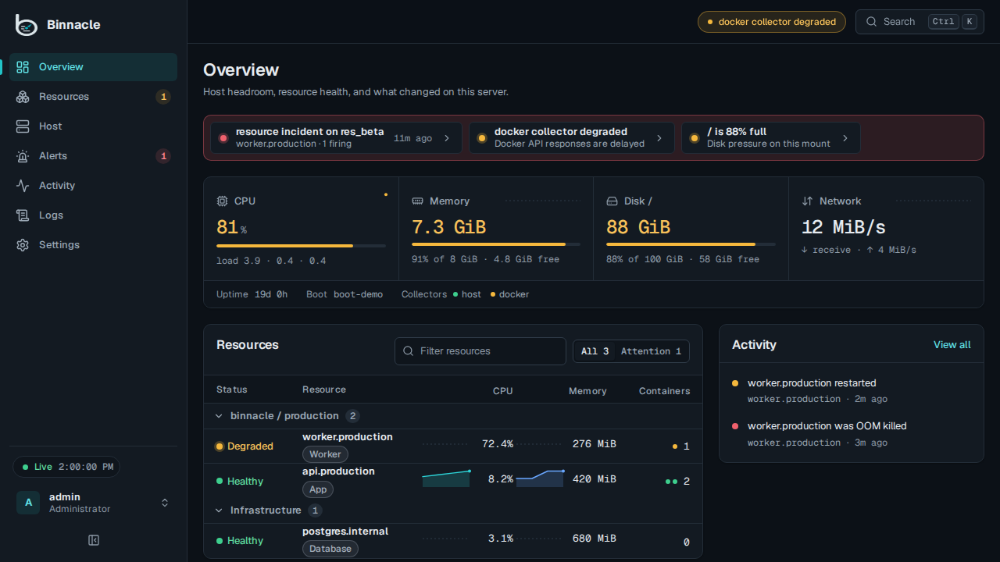

Headroom at a glance
CPU, memory, every mounted filesystem, and network with an hour of trend on the first screen, so “almost full” is visible before it becomes an outage.
Read-only monitoring for one Docker server
Binnacle shows host headroom, every Coolify and Compose service with its containers, HTTP checks, incidents, and what changed, in one lightweight dashboard that keeps its history in a local SQLite file. No Prometheus, no Grafana, no telemetry.
Current release v0.6.0 is available for amd64 and arm64 from GHCR with an immutable version tag.

The problem
Coolify makes it easy to deploy apps. Binnacle helps you understand what those apps are doing to your server over time: memory pressure, CPU spikes, disks filling up, restarts, OOM kills, and noisy services.
CPU, memory, every mounted filesystem, and network with an hour of trend on the first screen, so “almost full” is visible before it becomes an outage.
Containers roll up into logical resources with stable history across deployments, grouped by Coolify project and environment when that metadata exists.
Deterministic alert rules and HTTP checks open incidents per target, deliver to webhooks or email with retries, and resolve themselves when the condition clears.
Operating principles
Metrics stay on your server in SQLite. No cloud account. No external telemetry.
One Go process and one database file, with bounded queues and retention, sized for a VPS rather than a fleet.
Uses Coolify and Compose metadata to present logical services instead of transient container IDs.
Observes Docker without stop, restart, delete, exec, shell, or redeploy controls. There is nothing to click that changes your workloads.
Streams current host and container state to the dashboard as samples are collected, and never auto-scrolls under your pointer.
Keeps local metric and event history in tiers so you can see what changed, not just what is happening now.
Resource model
Binnacle works with plain Docker and Docker Compose. On Coolify hosts it uses the labels and metadata already on your containers to keep logical resources recognizable across container replacement.
Docker monitoring comes first. Coolify awareness improves names and grouping without making the dashboard depend on the Coolify API.
Tool selection
Binnacle is not trying to replace Prometheus, Grafana, or a centralized multi-node metrics platform. It is for single Docker servers and Coolify VPSs that need clear local visibility with minimal operational overhead.
Project status
v0.6.0 passed release qualification and is published with a multi-architecture container image and build provenance.
Advanced authentication and portability remain disabled by default pending acceptance. Multi-server monitoring remains later scope; workload controls remain excluded.
Deploy
Linux on amd64 or arm64 · Docker Engine 29.5.1+ · read access to
host /proc, /sys, and Docker · one
persistent data volume
The first browser session claims the installation with this token and creates the administrator.
export BINNACLE_SETUP_TOKEN="$(openssl rand -hex 32)"Deploy the included service template, copy the generated setup token, attach a domain, and complete local onboarding.
Use the canonical Compose definition with host telemetry mounts, the Docker socket, and a persistent SQLite volume.
Use the immutable v0.6.0 image tag in production.
The guide covers Coolify, Docker Compose, secrets, upgrades,
and the restricted Docker socket boundary.
Reference